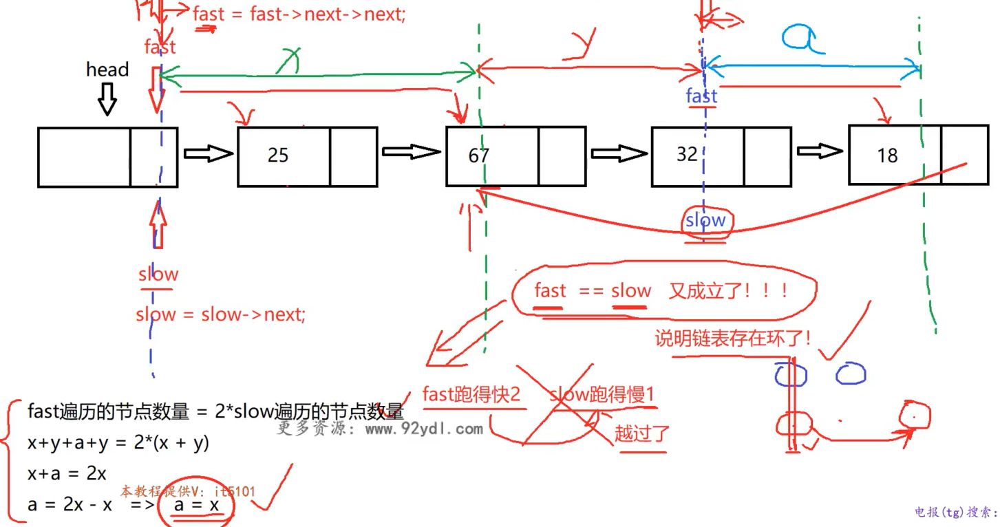

基本结构与算法分析
数组，链表，栈，队列
数据结构算法复杂度介绍
数据结构: 相互之间存在一种或者多种特定关系的数据元素的集合. 在逻辑上可以分为线性结构, 散列结构, 树形结构, 图形结构等等
算法: 求解具体问题的步骤描述, 代码上表现出来是解决特定问题的一组有限的指令序列
算法复杂度: 时间和空间复杂度, 衡量算法效率, 算法在执行过程中, 随着数据规模n的增长, 算法执行所花费的时间和空间的增长速度.
常见的时间复杂度关系:

常见的时间复杂度:

数组
基本信息
数组的特点: 内存是连续的(这也是为什么数组称为线性表). 那么数组有什么优缺点呢？
优点:
- 下标访问(随机访问)的时间复杂度是O(1)
- 末尾位置增加删除元素时间复杂度是O(1)
- 访问元素前后相邻位置的元素非常方便
缺点:
- 非末尾位置增加删除元素需要进行大量的数据移动
- 搜索的时间复杂度: 如果是无序数组, 那么线性搜索O(n); 如果是有序数组, 那么就是二分搜索O(logn)
- 数组扩容消耗比较大(如何扩容? 之后会有具体的细节实现)
注意!
- 随机访问 ≠ 查找 or 搜索
- 线性搜索指的是下标从0开始一直到n-1来一个一个进行随机访问
- "数组插入或删除元素十分不方便"其实要分情况, 是末尾位置加入元素还是中间位置?
int arr[10];
// c/c++中, 不能用变量来初始化数组, 必须要用常量
// 如果访问arr[10], 那么就是越界访问
增删改查——基本接口
首先回顾: 内存分区.
- 数据段(data): 存放全局变量的地方, 系统分配系统释放, 生命周期是整个程序的生命周期
- 堆(heap): 自己开辟自己释放(new delete)
- 栈(stack): 函数进来, 自动分配; 函数出右括号, 系统释放
所以希望自己控制扩容等, 必须要将内存放在堆区:
// array.cpp
#include <iostream>
#include <stdlib.h>
#include <time.h>
using namespace std; // 建议之后放弃这一行, 命名空间都带上std
class Array
{
public:
// 如果没有传, 默认capacity是10
Array(int size = 10): mCur(0), mCap(size) // 初始化列表的顺序一定要是成员定义的顺序
{
mpArr = new int[mCap]();
}
~Array()
{
delete []mpArr; // 仅仅是堆上面的数据释放了
// 没必要判断mpArr原来是不是空指针, 因为不知道是野指针还是指向的内存被释放
// 即使原本就是空指针, 那么delete就相当于是空操作
mpArr = nullptr; // 防止野指针的出现
}
// 末尾增加元素
void push_back(int val){
// 如果数组满了, 需要扩容
if (mCur == mCap){
expand(2 * mCap);
}
mpArr[mCur] = val;
mCur++;
}
// 末尾删除元素
void pop_back(){
if (mCur == 0){
return;
}
mCur--;
}
// 按位置增加元素
void insert(int pos, int val){
// 好习惯: 判断传入参数的有效性
if (pos < 0 || pos > mCur){
return; // invalid position
}
// 如果数组满了, 需要扩容
if (mCur == mCap){
expand(2 * mCap);
}
for (int i = mCur - 1; i >= pos; i--){
mpArr[i+1] = mpArr[i];
}
mpArr[pos] = val;
}
// 按位置删除
void erase(int pos){
if (pos < 0 || pos >= mCur){
return; // invalid operation
}
for (int i = pos + 1; i < mCur; i++){
mpArr[i-1] = mpArr[i];
}
mCur--; // 代表数组少了一个元素
}
// 元素查询
int find(int val){
for (int i = 0; i < mCur; i++){
if (mpArr[i] == val){
return i;
}
}
return -1;
}
void show() const{
for (int i = 0; i < mCur; i++){
cout << mpArr[i] << " ";
}
cout << endl;
}
private: // 一定要先理清哪些是私有成员那些事公开成员
int *mpArr; // 指向可扩容的数组内存
int mCur; // 数组有效元素的个数, 这里有妙用
int mCap; // 数组的容量
// 内部数组扩容接口
void expand(int size){
// 开辟更长内存, 复制数据, 然后释放原来的数据
int *p = new int[size];
memcpy(p, mpArr, sizeof(int) * mCap);
delete[]mpArr;
mpArr = p;
mCap = size;
}
};
int main(){
Array arr;
srand(time(0));
for (int i = 0; i < 10; i++){
arr.push_back(rand() % 100);
}
arr.show();
arr.pop_back();
arr.show();
arr.insert(0, 100);
arr.show();
arr.insert(10, 200);
arr.show();
int pos = arr.find(100);
if (pos != -1){
arr.erase(pos);
arr.show();
}
return 0;
}
常见题目
元素逆序问题
问题：逆序字符串——引入十分重要的双指针思想!
// reverse.cpp
#include <iostream>
#include <string.h>
using namespace std;
void Reverse(char arr[], int size){ // 传入size是因为数组传入之后会退化为指针, 所以需要知道个数
char *p = arr;
char *q = arr + size - 1;
while (p < q){
char ch = *p;
*p = *q;
*q = ch;
p++;
q--;
}
}
int main(){
char arr[] = "hello world";
cout << arr << endl;
Reverse(arr, strlen(arr)); // strlen()需要用<string.h>
cout << arr << endl;
return 0;
}
双指针是一类非常重要的问题, 双指针思想要熟练!
双指针实战——奇偶数调整问题
问题描述: 整型数组, 把偶数调整到数组的左边, 把奇数调整到数组的右边
思路: 尝试利用双指针! 让p指针从左开始寻找到第一个奇数, 然后q指针从右边开始寻找到第一个偶数, 然后p q两个指针的数字进行交换, 交换完成之后, p++ q--; 同时, more specifically, 如果p找到了第一个奇数, 那么就停止, 不再p++, 否则指针会一步一步向右边移动; q同理. 直到p q两个指针都动不了的时候, 交换, 然后都走动, 判断条件是while(p < q)
// odd_even.cpp
#include <iostream>
#include <time.h>
using namespace std;
void AdjustArray(int arr[], int size){
int * p = arr;
int * q = arr + size - 1;
while (p < q){
if (*p % 2 == 0){ // p指针对应的是偶数, 那么就右边移动
p++; // 否则, 那就不会移动
}
if (*q % 2 == 1){ // q指针对应的是奇数, 那么就左移动
q--; // 否则, 那就不会移动
}
// 先处理完移动的程序, 然后判断时候交换p q指针的数字
if ((*p % 2 == 1) && (*q % 2 == 0)){ // 如果p对应奇数而q对应偶数, 交换!
int temp = *p;
*p = *q;
*q = temp;
}
}
}
int main(){
int arr[10] = {0};
srand(time(0));
for (int i = 0; i < 10; i++){
arr[i] = rand()%100;
}
// trick : 基于范围的for循环
for (int v : arr){
cout << v << " ";
}
cout << endl;
AdjustArray(arr, 10);
for (int v : arr){
cout << v << " ";
}
return 0;
}
我觉得, 双指针的灵魂就在于: p指针左边一定是处理完成的, 而q指针右边一定是处理完成的! 同时, 在判断p(q)指针的数字是不是偶数(奇数)的时候, 有下面这个位运算的trick, 速度上会更快:
if (*p & 0x1 == 0){}; // 如果p指针对应的是偶数
if (*q & 0x1 == 1){}; // 如果q指针对应的是奇数
关于这种方法的解释, ChatGPT如下解释:
这是通过位运算来判断一个指针对应的值是否为偶数。代码中的表达式 (*p & 0x1 == 0) 使用了按位与操作符 (&) 来检查数值的最低有效位（least significant bit, LSB). 具体地说：
-
*p表示通过指针p访问的值。 -
0x1是一个十六进制数，等同于二进制的0001，只关注数值的最低有效位。 -
*p & 0x1是按位与操作，用来检测*p
的最低有效位是否为 1。
- 如果
*p & 0x1结果是 0，这意味着最低有效位是 0，那么*p就是一个偶数。 - 如果
*p & 0x1结果是 1，这意味着最低有效位是 1，那么*p就是一个奇数。
当然上面这种解法很straight forward, 能不能优化呢? 在每一次的循环中, 假如说p指针不动了, 而q一直在动, 那么相当于q的循环移动过程中, p白白多判断了很多次. 那么一种很好的逻辑是: 我一次让p q指针一次性动到位:
while (p < q){
while (p < q){
if ((*p & 0x1) == 0){
break;
}
p++
}
while (p < q){
if ((*q & 0x1) == 1){
break;
}
q--;
}
// 注意: 能跳出上面两个循环的情况除了p对应奇数, q对应偶数, 还能是什么corner case?
// 那就是arr中全是偶数(for example), 那么p == q, 意味着: 没有必要交换
if (p < q){ // 如果是p == q, 那么就没有必要交换了
int tmp = *p;
*p = *q;
*q = tmp;
p++;
q--;
}
}
这个程序的时间复杂度是 O(n)
双指针实战——移除元素问题
题目描述:
给你一个数组 nums 和一个值 val，你需要 原地 移除所有数值等于 val 的元素。元素的顺序可能发生改变。然后返回 nums 中与 val 不同的元素的数量。
假设 nums 中不等于 val 的元素数量为 k，要通过此题，您需要执行以下操作：
- 更改
nums数组，使nums的前k个元素包含不等于val的元素。nums的其余元素和nums的大小并不重要。 - 返回
k。
用户评测：
评测机将使用以下代码测试您的解决方案：
int[] nums = [...]; // 输入数组
int val = ...; // 要移除的值
int[] expectedNums = [...]; // 长度正确的预期答案。
// 它以不等于 val 的值排序。
int k = removeElement(nums, val); // 调用你的实现
assert k == expectedNums.length;
sort(nums, 0, k); // 排序 nums 的前 k 个元素
for (int i = 0; i < actualLength; i++) {
assert nums[i] == expectedNums[i];
}
示例 1：
输入：nums = [3,2,2,3], val = 3
输出：2, nums = [2,2,_,_]
解释：你的函数函数应该返回 k = 2, 并且 nums 中的前两个元素均为 2。
你在返回的 k 个元素之外留下了什么并不重要（因此它们并不计入评测）。
那么在这个问题中, 双指针又被赋予了新的含义: 因为双指针可以不再是一头一尾的设计意义了. 我希望用i从头开始遍历, 用j记录放下数字的引索(不等于val的下一个引索), 这是两套的"记号": 如果这个nums[i]是val, 那么j不动, 等待之后不是val的nums[i], 把这个值放过来; 如果nums[i]不是val, 那么j++, 代表刚刚那个地方就放原来那个地方的元素. 为什么能这样设计? 就是因为题目只要求保证前k个元素不是val, 后面的根本不用管, 所以说, 我只需要用j这个设计来更新数组里面的元素, 让后面的非val元素放到前面来:
// [27] 移除元素
// @lc code=start
class Solution {
public:
int removeElement(vector<int>& nums, int val) {
int j = 0; // 指向不等于val的下一个位置
for (int i = 0; i < nums.size(); i++){
if (nums[i] != val){
nums[j] = nums[i];
j++;
}
}
return j;
}
};
// @lc code=end
链表
基本知识
特点： 每一个节点都是在堆内存上独立new出来的, 节点内存不连续.
优点:
- 内存利用率高, 不需要大块连续内存
- 插入和删除节点不需要移动其他节点, 时间复杂度为
O(1) - 不需要专门进行扩容操作
缺点:
- 内存占用量大, 因为每一个节点多出存放地址的空间
- 节点内存不连续, 无法进行内存随机访问
- 链表搜索效率不高, 只能从头节点开始逐节点遍历
那么就有疑问了: 每一个节点之间都是独立的, 那么在一个节点如何知道上下节点在哪里? 之前数组里面, 用p++ p--就能移动指针, 找到上面下面的数据, 因为数组储存是连续的. 所以说, 链表的节点一定不是简单储存数据的, 还要存放下一个节点的地址.
因此, 一个node里面, 分为数据域data 和 地址域next, 其中地址域储存的是下一个节点的地址. 通过这样的设计以实现: 1. 链表的每一个节点都是独立分配出来的 2. 从当前节点能够找到下一个节点. 值得注意的是, 最后一个节点的地址域存放的是nullptr.
代码实现——单链表
单链表, 顾名思义, 每一个节点只能找到下一个节点, 但是找不到上一个节点. 在具体实现中, 我们设计头节点, 其中头节点的地址域为空指针, 为了防止链表里面没有有效节点而不好操作的情况. 用head指针指向头节点, 初始化的时候, 头节点的地址域为空, 然后在加入有效节点的时候, new一块新内存, 然后把地址写进头节点的地址域中. 当然值得注意的是, 对于任何一个有效节点的加入, 我们都设计成: 初始化的时候地址存放的是空, 然后下一个节点加入的时候, 把它的地址放在上一个节点的地址域中.
需要实现的功能: 尾部插入, 头部插入, 节点删除, 删除多个节点, 搜索, 打印, 构造析构
// clink.cpp
#include <iostream>
#include <stdlib.h>
#include <time.h>
using namespace std;
struct Node{
Node(int data = 0): data_(data), next_(nullptr){}
int data_;
Node* next_;
};
class Clink{
public:
Clink(){
// 初始化的时候, 指向头节点; new Node()在开辟的时候, 同时也会调用构造函数进行初始化
head_ = new Node();
}
~Clink(){ // 一定不是简简单单的释放头指针就完了! 理解为什么需要p head_两个指针完成操作!
Node *p = head_;
while (p != nullptr){
head_ = head_->next_;
delete p;
p = head_;
}
head_ = nullptr;
}
void InsertTail(int val){ // 链表尾插法
// 先找到当前链表的末尾节点, 然后生成新节点; 如何找到尾节点呢? 判断地址域是不是空指针!
Node *p = head_;
while (p->next_ != nullptr){
p = p->next_;
}
Node *node = new Node(val);
p->next_ = node;
}
void InsertHead(int val){ // 链表头插法; 注意修改的顺序!!
Node *node = new Node(val);
node->next_ = head_->next_;
head_->next_ = node;
}
void Remove(int val){ // 删除节点; 理解为什么p q要两个结构体指针来操作!
Node *p = head_->next_;
Node *q = head_;
while (p != nullptr){
if (p->data_ == val){
q->next_ = p->next_;
delete p; // 释放p对应的node
return;
}
else{
q = p;
p = p->next_;
}
}
}
bool Find(int val){
Node *p = head_->next_;
while (p != nullptr){
if (p->data_ == val){
return true;
}
else{
p = p->next_;
}
}
return false;
}
void RemoveAll(int val){
Node *p = head_->next_;
Node *q = head_;
while (p != nullptr){
if (p->data_ == val){
q->next_ = p->next_;
delete p;
p = q->next_;
}
else{
q = p;
p = p->next_;
}
}
}
void Show(){
// 注意这里指针的设计! 这样可以防止尾节点的数据忘记被打印!
Node *p = head_->next_;
while (p != nullptr){
cout << p->data_ << " ";
p = p->next_;
}
cout << endl;
}
private:
Node *head_;
};
int main(){
Clink link;
srand(time(0));
for (int i = 0; i < 10; i++){
int val = rand()%100;
link.InsertTail(val);
cout << val << " ";
}
cout << endl;
link.InsertTail(200);
link.Show();
link.Remove(200);
link.Show();
link.InsertHead(233);
link.InsertHead(233);
link.InsertTail(233);
link.Show();
link.RemoveAll(233);
link.Show();
}
常见题目
单链表逆序
Eg: head -> 25 -> 67 -> 32 -> 18 经过逆序之后: head -> 18 -> 32 -> 67 -> 25
思路: 头节点的地址域变成空, 然后按照顺序进行头插. 头插的时候, 需要用两个指针, 一个用来记录顺序下的下一个节点的地址(q), 一个用来实现头插(p).
struct Node{
Node(int data = 0): data_(data), next_(nullptr){}
int data_;
Node* next_;
};
class Clink{
//...
private:
Node *head_;
// 方便函数访问它的私有成员
friend void ReverseLink(Clink &link);
}
void ReverseLink(Clink &link){
Node *p = link.head_->next_;
if (p == nullptr){return;}
link.head_->next_ = nullptr;
while (p != nullptr){
Node *q = p->next_;
p->next_ = link.head_->next_;
link.head_->next_ = p;
p = q;
}
}
单链表求倒数第k个节点
问题描述: 在实战中, 节点数量是很多的. 如果我需要知道单链表倒数第k个节点的数字是多少呢?
一种暴力的方法是: 先遍历一遍, 直到尾节点, 直到全部的节点数量; 然后再遍历一边. 这当然是可以的, 但是时间复杂的是O(n); 所以说这种方法是不可取的, 而且一旦节点数量非常大, 那么就会瞬间爆炸.
更好的方法是: 设计双指针p & q, 然后两者都从头节点出发, 但是先让p走k步, 然后之后p q一起走. 直到p指针变成了空指针, 那么q自动指向的就是倒数第k个节点了.
struct Node{
Node(int data = 0): data_(data), next_(nullptr){}
int data_;
Node* next_;
};
class Clink{
//...
private:
Node *head_;
// 方便函数访问它的私有成员
friend bool GetLastKNode(Clink &link, int k, int &val);
}
bool GetLastKNode(Clink &link, int k, int &val){
// 注意是引用传递, 这样就可以将值赋给val
Node* head = link.head_;
Node* q = head;
Node* p = head;
// 好习惯: 判断参数有效性!! 为什么小心k=0? 因为p最后开始走0步, 然后和q一起到空指针
// 悲剧就是: 访问了空指针.
if (k < 1){return false;}
for (int i = 0; i < k; i++){
p = p->next_;
if (p == nullptr){
return false;
}
}
while (p != nullptr){
q = q->next_;
p = p->next_;
}
val = q->data_;
return true;
}
合并两个有序单列表
已经有一个链表1和2, 两个从小到大已经排好序了, 然后希望2连接到1上. 并且最后依然是从小到大排序.
我们需要在1 2两个链表上面各自有一个指针, p q来判断两个数字谁打谁小; 同时, 不难想到, 我们希望用一个last指针来储存上一次操作完之后所停留在的节点信息. 处理完之后, 假如说p对应数字更大, 那么就:
last->next_ = p;
p = p->next_;
last = last->next_;
当然, 肯定有一个指针会先走到nullptr的, 那么假如说p变成了空指针, 说明p所在的1链表没有节点要串起来了, 直接将q指向的节点及其后面的一系列节点归并到last上面:
struct Node{
Node(int data = 0): data_(data), next_(nullptr){}
int data_;
Node* next_;
};
class Clink{
//...
private:
Node *head_;
// 方便函数访问它的私有成员
friend bool MergeLink(Clink& link1, Clink& link2);
}
bool MergeLink(Clink& link1, Clink& link2){
Node* p = link1.head_->next_;
Node* q = link2.head_->next_;
Node* last = link1.head_;
link2.head_->next_ = nullptr;
while (p != nullptr && q != nullptr){
if (p->data_ < q->data_){
last->next_ = p;
p = p->next_;
last = last->next_;
}
else{
last->next_ = q;
q = q->next_;
last = last->next_;
}
}
if (p != nullptr){
last->next_ = p;
}
else{
last->next_ = q;
}
}
判断单链表是否存在环以及入口节点
如果存在环的话, 那么假如说开始遍历的话, 根本遍历不完! 什么时候存在环? 打个比方, 地址上来看有: A -> B -> C -> D -> A, 那么就是一个环, 而且遍历是十分危险的.
不假思索地: 可以遍历的时候, 把每一个节点的地址单独储存起来, 每遍历一步之后, 看这个地址在不在之前储存的地址库里面. 但是, 依然是希望能够原地解决问题.
环的特点有什么? 除了我总是能回到我之前跑过的地方, 还有一个特点: 两个速度不一样的人跑圈, 总是能快的从后面追上慢的! 因此, 这个问题涉及到了双指针的应用——快慢指针.
这样一来, 判断出是否存在环就比较简单了. 就比如, slow指针跑的慢, 一次走一个节点; fast指针走得快, 一次走两个节点; fast == slow, 那么就成环, 而如果fast变成了空指针, 那么就说明没有环. 那么这时候就有一个灵性的问题了: 会不会fast指针跨越过slow指针? 其实这是伪命题. 唯一能发生这样的情况就是fast == slow!
但是如何寻找节点呢? 如下图 :

如果在这个时候, fast slow不再代表快慢, 而是仅仅是记号, 那么把fast指针放回到head, 每次走一步. 那么fast和slow同时开始走, 最后再次相遇的地方正好就是入口的地方!
bool IsLinkHasCircle(Node* head, int& val){
Node* fast = head;
Node* slow = head;
while (fast != nullptr && fast->next_ != nullptr){ // fast走两步, 所以判断两个是不是nullptr, 防止访问空指针
slow = slow->next_;
fast = fast->next_->next_;
if (fast == slow){
fast = head;
while (fast != slow){
slow = slow->next_;
fast = fast->next_;
}
val = slow->data_;
return true;
}
}
return false;
}
附: 这个函数传入的是结构体(Node)指针, 是因为这样方便测试. 测试代码, 详见: clink.cpp
判断两个链表是否相交以及相交入口
一种很直接的思路: 先各自遍历两个链表, 得到a b两个长度, 然后假设链表1的长度a更大, 那么就1链表指针先走(a-b)步, 然后1 2链表的两个指针一起走, 最后相遇的地方就是入口; 如果最后两个都各自变成了nullptr, 那么就说明不相交.
bool IsLinkHasMerge(Node* head1, Node* head2, int& val){
int cnt1 = 0, cnt2 = 0;
Node* p = head1->next_;
Node* q = head2->next_;
while (p != nullptr){
cnt1++;
p = p->next_;
}
while (q != nullptr){
cnt1++;
q = q->next_;
}
p = head1->next_;
q = head2->next_;
if (cnt1 > cnt2){
int offset = cnt1 - cnt2;
while (offset-- > 0){
p = p->next_;
}
while (p != nullptr && q != nullptr){
if (p == q){
val = p->data_;
return true;
}
p = p->next_;
q = q->next_;
}
return false;
}
else {
int offset = cnt2 - cnt1;
while (offset-- > 0){
q = q->next_;
}
while (p != nullptr && q != nullptr){
if (p == q){
val = p->data_;
return true;
}
p = p->next_;
q = q->next_;
}
return false;
}
}